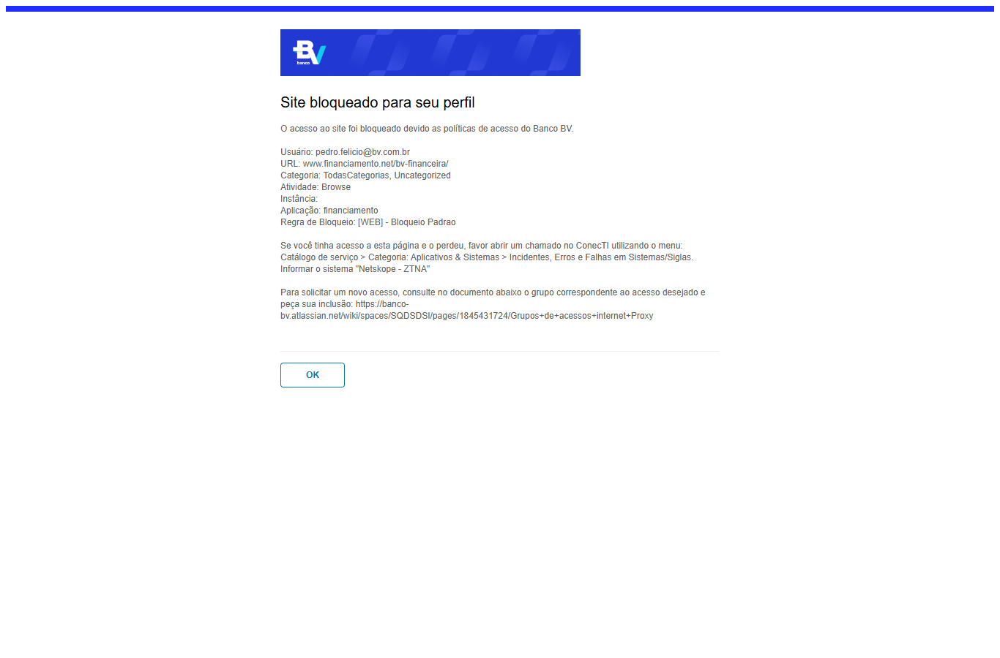

SIMIO · dossiê de candidato · campanha simio-20261119-174043-8bbc · gerado em 2026-11-19T21:22:03+00:00
https://www.financiamento.net/bv-financeira/
REVIEW_REQUIRED Prioridade MEDIUM · Cenário B_AMBIGUOUS_COMMUNICATION · Revisão humana: PENDING
Este dossiê apresenta indícios para apoio à auditoria. Não constitui conclusão regulatória. As conclusões automatizadas devem ser verificadas contra as evidências brutas abaixo (screenshots, catálogo e arquivos com hash). Conteúdo de terceiros é exibido como texto; links não são clicáveis por segurança.
Triagem heurística — cenário B_AMBIGUOUS_COMMUNICATION: uso destacado da marca sem transparência suficiente. Elementos que podem levar o consumidor a crer que trata diretamente com a instituição: Nenhuma declaração de correspondente/independência observada no conteúdo coletado [E-DISC-001]. (Pontuação de triagem: confusão 1.5, transparência 0.0; ordena casos, não prova.) [Revisor: HUMAN_REVIEW] Questionamentos registrados; encaminhado para revisão humana.

| Ref | Tipo | Local | Conteúdo |
|---|---|---|---|
| E-URL | domain | url | URL final: https://www.financiamento.net/bv-financeira/ (domínio: www.financiamento.net) |
| E-COLLECT | network | collection | Status da coleta: BLOCKED; HTTP 403; ocorrências: HTTP 403: acesso bloqueado pelo filtro web corporativo da rede |
| E-DISC-001 | text | search_index | Índice de busca (grounding): financiamento.net — **Financiamento.net (`financiamento.net`)** | **Conformidade / Uso da Marca:** Página dedicada exclusivamente à **BV Financeira** com foco em financiamento de motos, carros e caminhões | **Irregularidade observada:** Redigida de forma a exaltar a marca (*"com a BV Financeira você financia uma moto... você pode confiar"*), promove simulador online e divulga telefone 0800 no corpo do texto, utilizando apenas um aviso discreto de isenção editorial sem identificar a empresa responsável pelo domínio |
| E-SHOT-VIEWPORT | screenshot | viewport | evidence\C65d1e41bc2\attempt-1\viewport.png (sha256 437cb9a6283e5efb…) |
| E-SHOT-FULL | screenshot | page | evidence\C65d1e41bc2\attempt-1\fullpage.png (sha256 437cb9a6283e5efb…) |
| Dimensão | Sinal | Achado | Refs |
|---|---|---|---|
| VISUAL_IDENTITY | NOT_ASSESSED | não avaliado pela heurística | |
| DECLARED_COMMERCIAL_IDENTITY | NOT_ASSESSED | não avaliado pela heurística | |
| CORRESPONDENT_TRANSPARENCY | CONFUSION | Nenhuma declaração de correspondente/independência observada no conteúdo coletado | E-DISC-001 |
| INSTITUTIONAL_LANGUAGE | NOT_ASSESSED | não avaliado pela heurística | |
| LOGO_USAGE | NOT_ASSESSED | não avaliado pela heurística | |
| SERVICE_JOURNEY | NOT_ASSESSED | não avaliado pela heurística | |
| CONTACT_CHANNELS | NOT_ASSESSED | não avaliado pela heurística | |
| CONSUMER_CONFUSION | NOT_ASSESSED | não avaliado pela heurística |
Triagem heurística — cenário B_AMBIGUOUS_COMMUNICATION: uso destacado da marca sem transparência suficiente. Elementos que podem levar o consumidor a crer que trata diretamente com a instituição: Nenhuma declaração de correspondente/independência observada no conteúdo coletado [E-DISC-001]. (Pontuação de triagem: confusão 1.5, transparência 0.0; ordena casos, não prova.)
Nenhum CNPJ ou razão social identificáveis no conteúdo coletado.
| Tipo | Valor | Ref | Contexto |
|---|---|---|---|
| domain | financiamento.net | E-URL |
Mapeamento indicativo para apoio à auditoria. Não constitui conclusão regulatória; a decisão definitiva pertence à auditoria.
Fonte: NORMATIVE
Art. 14. O contrato de correspondente deve estabelecer: [...] II - vedação à utilização, pelo contratado, de logomarca ou de outros atributos que sejam similares aos adotados pela instituição contratante em suas agências, postos de atendimento, sítio eletrônico na internet, aplicativo ou outras plataformas de comunicação em rede;
Evidência observada: —
Fonte: NORMATIVE
Art. 14. O contrato de correspondente deve estabelecer: [...] III - divulgação ao público, pelo contratado, de sua condição de prestador de serviços à instituição contratante, identificada pelo nome com que é conhecida no mercado, com descrição dos produtos e serviços oferecidos e canais de contato da instituição contratante, inclusive de sua ouvidoria, em local visível, em destaque e em formato legível, por meio de: a) sítio eletrônico do correspondente na internet, acessível na página inicial; b) aplicativo e outras plataformas de comunicação em rede do correspondente; [...]
Hipótese: Divulgação ao público da condição de prestador de serviços à contratante ausente, insuficiente ou sem destaque. A norma disciplina correspondentes contratados; o responsável não foi identificado como correspondente.
Evidência observada: E-DISC-001
Informação faltante:
Fonte: NORMATIVE
Art. 3º O correspondente atua por conta e sob as diretrizes da instituição contratante, que assume inteira responsabilidade pelo atendimento prestado aos clientes e usuários por meio do contratado.
Evidência observada: —
Se o responsável não for correspondente contratado, os indícios podem caracterizar uso indevido de marca ou fraude, fora do escopo da Res. 4.935: avaliar encaminhamento às áreas jurídica/segurança.
Limitações: requisitos contratuais/internos não fornecidos: mapeamento limitado ao texto normativo
Decisão: HUMAN_REVIEW → REVIEW_REQUIRED / MEDIUM
Questionamentos registrados; encaminhado para revisão humana.
| Tema | Severidade | Questionamento | Refs |
|---|---|---|---|
| domain_attribution | MEDIUM | Responsável pela página não identificado; a conclusão sobre a marca não pode ser atribuída a um estabelecimento específico. | E-URL |
| unanalyzed_visual_context | MEDIUM | Identidade visual não foi avaliada por modelo multimodal; verificar screenshots. | E-SHOT-VIEWPORT |
| Fonte | Consulta / hipótese | URL original | Título / trecho |
|---|---|---|---|
| grounding | páginas de financiamento de moto usando a marca Banco BV ou bv financeira mantidas por lojas, promotoras ou correspondentes bancários onde a marca do banco aparece em destaque principal, com simulador ou captação sem identificar claramente a condição de correspondente independente H2-product:financiamento de moto | https://www.financiamento.net/bv-financeira/ | financiamento.net **Financiamento.net (`financiamento.net`)** | **Conformidade / Uso da Marca:** Página dedicada exclusivamente à **BV Financeira** com foco em financiamento de motos, carros e caminhões | **Irregularidade observada:** Redigida de forma a exaltar a marca (*"com a BV Financeira você financia uma moto... você pode confiar"*), promove simulador online e divulga telefone 0800 no corpo do texto, utilizando apenas um aviso discreto de isenção editorial sem identificar a empresa responsável pelo domínio |
Original: https://www.financiamento.net/bv-financeira/
Final: https://www.financiamento.net/bv-financeira/
| Artefato | Caminho | SHA-256 | Bytes |
|---|---|---|---|
| screenshot_viewport | evidence\C65d1e41bc2\attempt-1\viewport.png | 437cb9a6283e5efbcfeed8451916a6eab04f70cb94ded3301c08726a07019dd5 | 47758 |
| screenshot_full | evidence\C65d1e41bc2\attempt-1\fullpage.png | 437cb9a6283e5efbcfeed8451916a6eab04f70cb94ded3301c08726a07019dd5 | 47758 |
| html | evidence\C65d1e41bc2\attempt-1\page.html.txt | 9bf44b31e42a8c54b35aaa0cfebfb489ac8ed2be0829c0cf907409df0187a951 | 65503 |
| text | evidence\C65d1e41bc2\attempt-1\text.txt | 0082c0e9fdf9ce605766c9487211deb248703983810a00537d11436b5bfb35ae | 803 |
| page_data | evidence\C65d1e41bc2\attempt-1\page.json | c3ed60f127dfa283ff674dda536a2b71c2824243ba43c31ee642e87dcf0cae1b | 2770 |
| Quando | De | Para | Nota |
|---|---|---|---|
| 2026-11-19T18:10:10+00:00 | DISCOVERED | QUEUED | prioritised (score 2.0) |
| 2026-11-19T18:18:24+00:00 | QUEUED | COLLECTING | |
| 2026-11-19T18:18:30+00:00 | COLLECTING | COLLECTED | |
| 2026-11-19T18:18:30+00:00 | COLLECTED | ANALYZING | |
| 2026-11-19T18:18:30+00:00 | ANALYZING | REVIEWING | |
| 2026-11-19T18:18:30+00:00 | REVIEWING | INCONCLUSIVE |